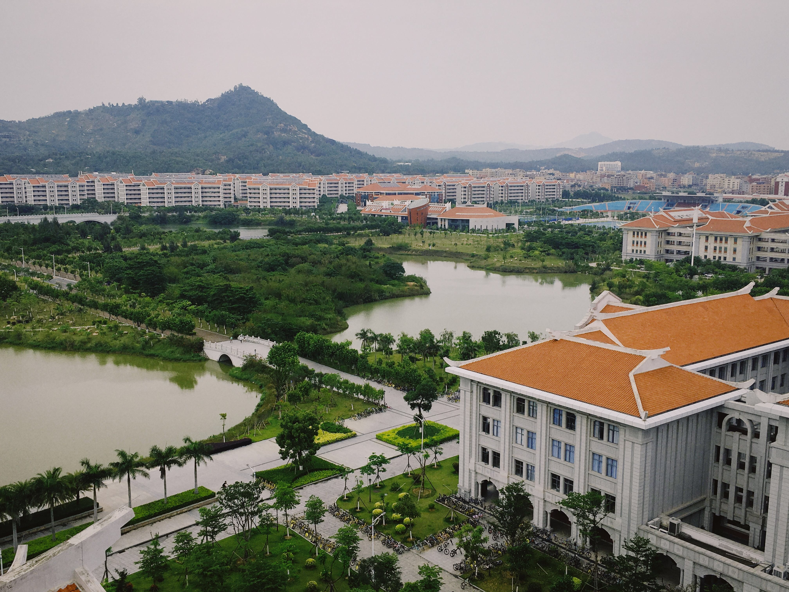
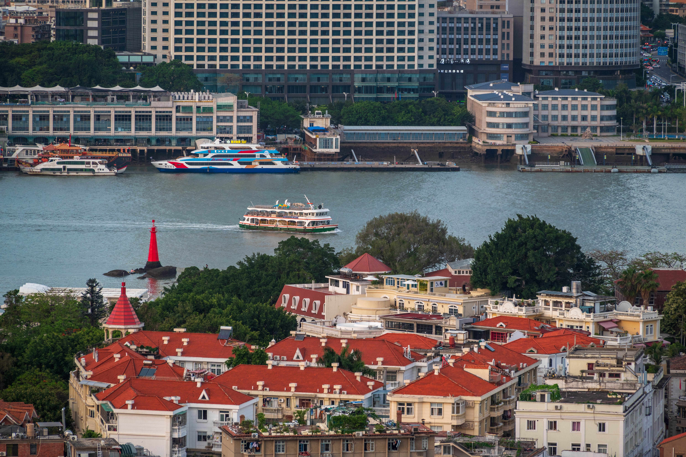

Xiamen is a port city on China's southeast coast, across a strait
from Taiwan. Formerly known as Amoy, it encompasses 2 main islands
and a region on the mainland.

Place of Interest

Gulangyu, Gulang or Kulangsu is a pedestrian-only island off the
coast of Xiamen
Xiamen University has been referred to as one of the most beautiful
universities in China
Xiamen Huandao Road (or known as Xiamen Islet-Ring Road) is a famous
sightseeing road